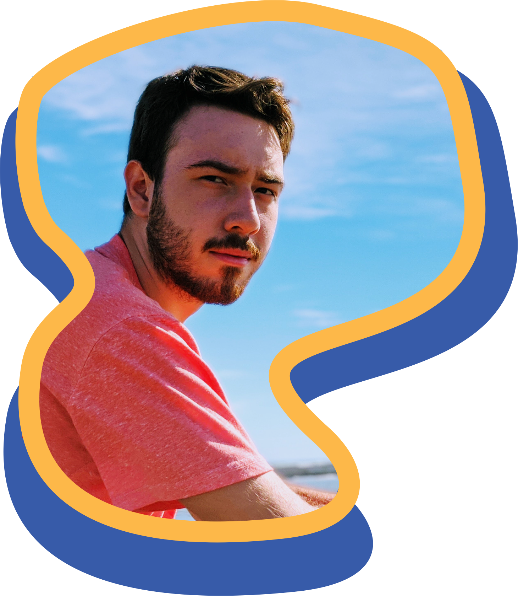

Gadiel Pugh
Nacimiento:
23/09/2002
Nacionalidad:
Argentina
Dirección:
Caleta Olivia, Argentina

Formación Académica
Nivel Primario
- Instituto República Argentina (Rio Grande, Tierra del Fuego)
- E.P.P. N°14 (Rio Grande, Tierra del Fuego)
- E.P.P. N°46 (Rio Gallegos, Santa Cruz)
Nivel Secundario
- Escuela Industrial N°4 (Rio Gallegos, Santa Cruz)
- Escuela Industrial N°1 (Caleta Olivia, Santa Cruz )
Título
Técnico en Informática Profesional y Personal
¿Qué es un técnico en esta especialización?